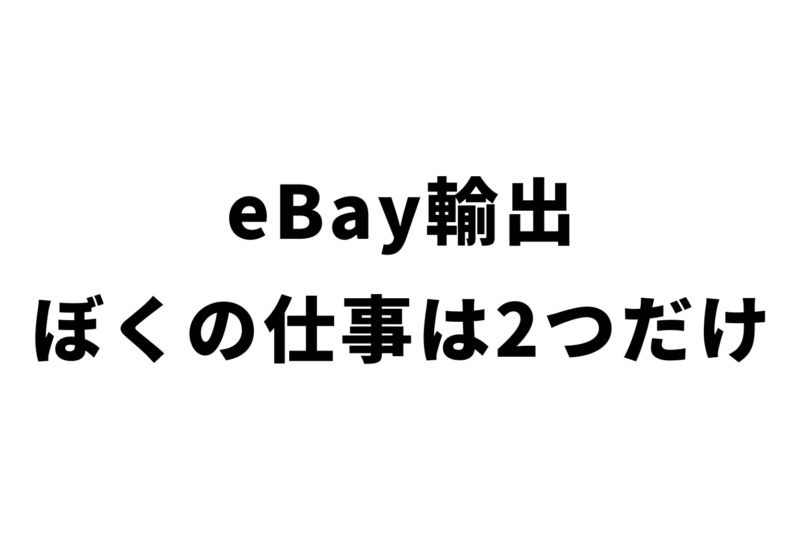

eBay輸出で、いまぼくがやっている仕事は2つだけです。
① 売れたときに、仕入れの購入ボタンを押すこと。
② AIに、改善の指示を出すこと。
リサーチも出品もしていません。
値段の調整もしていません。
お客さん対応も、一切していません。
前にeBayをやっていたときは、外注さんが21名いました。
それがいまは、この2つです。
今日は、eBay輸出でふつうは何をやるのか。
そして、なぜ2つだけで回るのかを書きます。
eBayの仕事、ぜんぶ書き出すとこれだけある
eBay輸出を始めると、まずこれをやります。
最初に1回だけ
・初期設定(ビジネスポリシー・送料の設定)
・ストアの契約
・バナーなど、お店の見た目づくり
毎日やること
・リサーチ(何が売れるか調べる)
・仕入れ先に在庫があるか調べる
・利益計算、送料計算
・最安で出せるなら、出品する
・出品ごとに、画像・説明文(Description)・商品の詳細(Item Specifics)を入れる
・仕入れ先とeBayをつないで、在庫を管理する
・競合と仕入れ先の値段を見て、値段を調整する(赤字にしない・最安を取られたら直す)
・Send Offer(気になっている人に値引きを送る機能)やセールのチェック
お客さん対応
・商品への質問、値引き交渉への返事
・オファーを受けるかどうか決めて、返事をする
・お礼、追跡番号のお知らせ、「届きましたか?評価お願いします」のメッセージ
・返品、全額返金、一部返金の交渉
売れたら
・仕入れる(在庫がなければ代わりの商品を探す)
・安全に、送料が安くなるように梱包する
・DHLやFedExに集荷を頼んで発送する
数字の管理
・目標・前月・前年同月と比べて、売上・利益・販売数・単価はどうか
・出品のときに見込んだ送料と、実際の送料にずれがないか
まだあったかもしれません。
でも、ざっとこれだけあります。
人に任せると、「人の仕事」が増える
これまでのeBayのセオリーは、こうでした。
まず自分でやる。
覚えて、言葉で説明できるようになったら、外注する。
ぼくも、そうやっていました。
いちばん多い月で、利益は月200万円弱。
そのとき、外注さんは21名いました。
ほとんどが、リサーチと出品の担当です。
ただ、外注すると今度は別の仕事が増えます。
・ちゃんとリサーチできているか
・ちゃんと出品できているか
・ちゃんと最安を取れているか
・eBayで売れているものを出品できているか
これをチェックして、指導して、改善していく。
外注さんの管理です。
そして、単純にコミュニケーション。
同じことを、一人ひとりに言わないといけません。
減らすために、リーダーやマネージャーを決めて、自分はその人とだけやり取りする。
そういう工夫もしていました。
さらに、報酬の計算、報酬明細づくり、振り込み、面接。
人を雇うための仕事も、毎月発生します。
eBayの仕事を減らすために人を雇ったら、人の仕事が増える。
これが、前のeBayでした。
いまやっているのは、2つだけ
いまは、リサーチも、出品も、値段の調整も、お客さん対応も、ぜんぶ社員(AI)がやっています。
人間は、梱包と発送をしてくれる外注さん1人だけです。
ぼくがやっているのは、2つ。
1. 仕入れの購入ボタンを押す
売れたら、仕入れ先の購入ボタンを押して、クレジットカードで払います。
いまのカード決済は、本人確認の認証がいくつも出てきます。
外注しても手間は同じなので、ここは自分でやっています。
2. AIに改善の指示を出す
改善の指示を出すだけです。
具体的な作業は、ぼくはしません。
本当に、この2つだけです。
▼お客さん対応をAIに任せたらどうなったかは、こちら
https://rental-space.net/articles/2026-09-21-ebay-customer-service-automation.html
改善指示で言っていること
「改善の指示」と言っても、むずかしいことはしていません。
たとえば、販売数が減ってきた。
目標の数字とのギャップが大きい。
そんなときに、AIにまず状況を分析してもらいます。
・どこに問題があるのか
・その問題は、なぜ起きているのか
・どう対応するか
ここまで考えてもらいます。
でも、これだけだとロジカルに考えているだけです。
いま起きている問題の、改善策しか出てきません。
なので、ラテラルにも聞きます。
状況分析はいったん脇にどけて、「仕入れ先を増やしたほうがいいんじゃない?」と相談する。
よさそうなら、仕入れ先の開拓までAIにやってもらいます。
▼仕入れ先の開拓をAIにやってもらった話
https://rental-space.net/articles/2026-09-08-ebay-ai-supplier-discovery.html
最近は、受賞セラーやすごく売れているセラーの調査もしてもらいました。
どうやっているかを調べてもらって、それを自分のお店に当てはめています。
▼有力セラーを7回調べてみた結果
https://rental-space.net/articles/2026-09-20-ebay-award-seller-summary.html
利益は、人でやっていたときのほうが出ていました
正直に書きます。
利益は、人でやっていたときのほうが全然出ていました。
それでも、いまのほうがいいです。
かける時間が、圧倒的に少ない。
だからほかのことができる。
そして、人間関係に気をつかわなくていい。
コミュニケーションのコストが、まるごとなくなりました。
前のeBayは、「大変だからやめたい」と思いながらやっていました。
いまは、まったくちがいます。
手間がかからない。
利益が出るのであれば、やらない理由がない。
空いた時間で、ぼくはこうして発信をしたり、教材を作ったりしています。
ボタンを押す。改善指示を出す。あとは社員がやる。
これで、いまは完全に回っています。
▼中の人が、フルAIでeBayをやってみた結果
https://rental-space.net/articles/2026-09-13-ebay-at-43-full-ai-results.html
まとめ
eBayの仕事をぜんぶ書き出すと、20個近くあります。
人に任せると、そこに「人の仕事」が足されます。
AIに任せたら、残ったのは2つでした。
あなたがいま、eBayで毎日やっている仕事はいくつありますか?
一度、紙に書き出してみてください。
そのうちいくつが、AIに渡せるか。
そこから始めると、ぜんぜん景色が変わります🐹
▼中の人🏠(レンタルスペース23部屋・売上1.5億)のレンスペ実録
https://note.com/rentalspace_kiku
▼ブログ(eBay×レンスペ、全記事まとめ)
https://rental-space.net
▼この店のやり方は、ぜんぶ1冊にまとめてあります
リサーチ・出品・値付け・顧客対応まで、初月利益10万4,286円を出した実店舗の記録と手順を全部書いた教科書です。
読んだその日から、AI社員の作り方をそのまま真似できます。
『AI × eBay輸出の教科書 — 梱包以外、ぜんぶAI』
https://rental-space.net/kyokasho/ebay/
販売価格は3部売れるごとに2,000円ずつ値上がりします（上限あり）。内容・最新価格は販売ページをご確認ください。